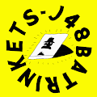 J48BATRINKETS J48BATRINKETS：GROTTO LABS 生态系统的最新版本。整个系列只需 0.033 ETH，您就可以加入 GROTTO LABS 和我们的考古团队，挖掘该系列中最稀有的小
Jadu Hoverboard Jadu Mirrorverse 是一个增强现实游戏世界¹ ，围绕玩家社区³拥有的虚拟物品²构建。 Jadu AVA为下一代 AR打造，将成为 Web3 中最具技术和创意的Avatar。 Jetpacks 旨在让
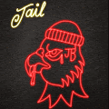 JAIL BIRDS ▶ 什么是监狱鸟？ JAIL BIRDS 是一个 NFT（不可替代令牌）集合。存储在区块链上的数字艺术品集合。 ▶ 存在多少个 JAIL BIRDS 代币？ 总共有 2,938 个 JAIL BIRDS NFT。目前，95
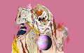 Jake's World Editions ▶ 什么是杰克的世界版？ Jake’s World Editions 是一个 NFT（不可替代代币）系列。存储在区块链上的数字艺术品集合。 ▶ 杰克的世界版代币有多少？ 总共有 14 个 Jake 的世界版
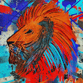 JakNFT Mints ▶ 什么是 JakNFT 薄荷糖？ JakNFT Mints 是一个 NFT（不可替代代币）集合。存储在区块链上的数字艺术品集合。 ▶ 有多少 JakNFT Mints 代币？ 总共有 7 个 JakNFT Mints NFT。目前，403
JaneDAO ▶ 什么是 JaneDAO？ JaneDAO 是一个 NFT（Non-fungible token）集合。存储在区块链上的数字艺术品集合。 ▶ 有多少 JaneDAO 代币？ 总共有 1,100 个
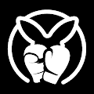 Kangaroo Punch Club 袋鼠拳击俱乐部是一个 NFT 集合，由独特的 3D 角色组成，在以太坊区块链上具有各种复杂的独特特征。每个 NFT 都包含实用程序。Kangaroo Punch Club NFT 不仅仅是
Karafuru x HYPEBEAST x atmos 这 15,555 个 NFT 代币与 HYPEBEAST 和 atmos 共同开发，将生活方式文化、激情和影响力的缩影带入了 Web3 元界。 ▶ 什么是花风扭蛋官方？ Karofuru Gachapon Official 是一个 NFT (Non-fungible token) 集合。存储在区块链上的
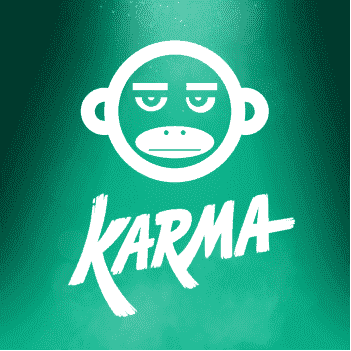 Karma Monkey 新的 NFT 集合提供 Monkeyverse 的成员资格、在 DAO 中投票资助 web3 和社区项目，以及访问任务和香蕉经济。Karma 艺术由我们获得奥斯卡奖提名的团队以及加密和技术资深
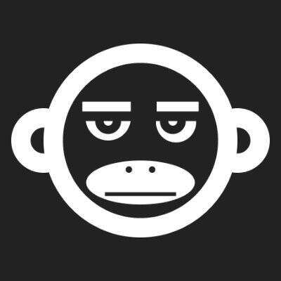 Karma VIP Allow List 此集合是 OCM Karma 铸币厂的 VIP 允许列表 NFT。详情如下： A. 铸币日期为 2022 年 6 月 29 日。VIP 允许名单铸币时间从东部时间上午 12:01（太平洋时间 6 月 28 日
KarmaVioletta 业力维奥莱塔，由 KarmaVioletta 在 Sound 上创建。对这首歌发表评论，KarmaVioletta 于 2022 年 8 月 30 日首次铸造。我们目前正在追踪流通中的 25 个尚未销毁或质押
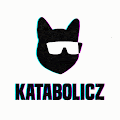 Katabolicz Genesis 经过多年的实验，身体发生了变异，但头脑很聪明，这些 Genesis Katz 发誓要保护他们的物种并引导他们进入一个明亮的新世界！Genesis Katz 的持有者不仅会收到
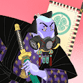 Katana N Samurai 2 Katana N Samurai : 最后的拉面，在以太坊网络上存储和运行。浮世绘是 1700 年代日本著名的传统艺术，我们的目标是将这种历史艺术带入整个 NFT 市场并传播日本文化。此外
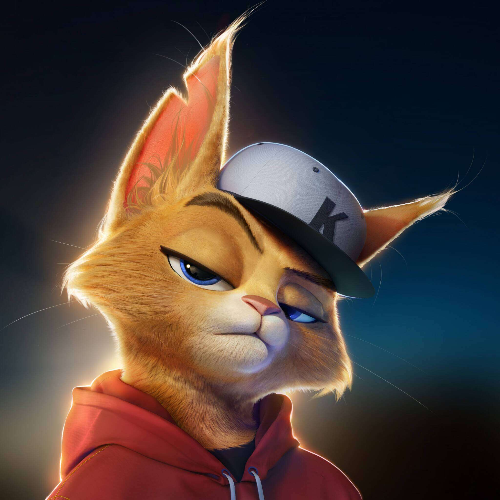 KATATONIK Serozense 的 Katatonik 是由社区驱动的 NFT 收藏品的独家收藏，由技术和动画领域的最伟大的头脑制作。KATATONIK 于 2022 年 7 月 22 日首次铸造。我们目前正在追踪流通中
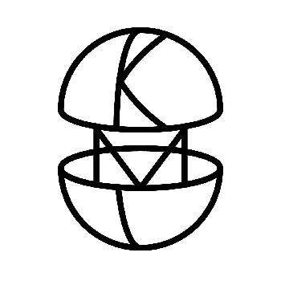 Kawaii Meta Collage - Opera Meets Metaverse supported by Mitsubishi Estate Kawaii Meta Collage - Opera Meets Metaverse 由 Mitsubishi Estate 支持，Kawaii Meta Collage 是 5,555 个独特的 Kawaii Girl NFT 的集合。这是“Opera Meets Metaverse by Mitsubishi Estate”项目的创世收藏，我们的 NFT 持有者将获
Kaylen Ward Kaylen Ward 的官方 NFT。由@ONLYNFTOFFICIAL 提供 Kaylen Ward “裸体慈善家”收藏之家。Kaylen 通过她在社交媒体上的病毒式宣传活动为澳大利亚
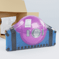 KBOT_FACTORY Kbots 是您钱包里一个有趣、可爱且非常全面的朋友。他们都有鲜明的个性和非常狂野的服装选择。 它们由 KlaraLabs 创建，这是一个致力于让世界充满欢乐的实验室！所有
KCG 目前，超过 60% 的 Kitty 供应已被质押在我们的 KCG Vault 中。更多信息可在我们的不和谐中找到。Kitty Crypto Gang 是一个由 7997 名坏男孩组成的团队，他们生活在由猫父执导
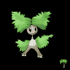 Kekemons rudalle Kandinsky x 表情符号 x 精灵宝可梦 (KEKemons)。该系列是由“ruDALL-E Kandinsky”、“ruCLIP Large”、“ruDOLP
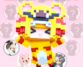 KemonoVerse 什么是KEMONO VERSE，Kemono的意思是动物。独特的动物般的 VoxelNFT 期待与您一起冒险。KEMONO Verse 已经获得了 NFTWORLD 的土地。您可以在这片土地
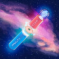 Kepler Multivisa 服用 Multivisa 药丸，您将置身于仙境，我们将向您展示兔子洞有多深 ▶ 什么是 Kepler Multivisa？ Kepler Multivisa 是一个 NFT（非同质代币）集合。存储在区块链上的数字
Keplers Civil Society 开普勒公民社会，Kedu 由 11 个独立的随机类别和 300 多个手绘特征来区分。每个 Kedu 在基因上都有能力控制存在的基本宇宙能量力量。 Kedu 通常是友好的生物，但
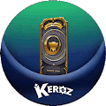 KEROZ LAND MINT PASS KEROZ 是一个令人兴奋的动作角色扮演游戏，可以削减一切！让我们与NF江英雄一起获得各种游戏体验。拥有 KLEROS Land MintPass 的玩家将能够通过即将到来的 Reveal 获得 KLEROS Lan
kev0 4,004 个 OMNI-CHAIN kev0 NFT，在 7 个由 LayerZero 协议提供支持的区块链上（每条链上的供应有限）Kev0 是一个独特的全链 NFT 集合，包含 4,004 个僵尸妖精，基于 KEVoLUTION 链游戏 一款以每
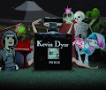 Kevin find stuff while wondering EDITIONS ▶ 什么是 Kevin 在想知道 EDITIONS 时发现的东西？ Kevin 在想知道 EDITIONS 是 NFT（非同质代币）集合时发现了一些东西。存储在区块链上的数字艺术品集合。 ▶ 有多少 Kevin 在想知道
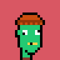 Kevin Punks ▶ 什么是凯文朋克？ Kevin Punks 是一个 NFT（非同质代币）集合。存储在区块链上的数字艺术品集合。 ▶ 有多少 Kevin Punks 代币？ 总共有 555 个 Kevin Punks NFT。目前，278 位
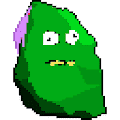 Kevin Rocks Kevin Rocks NFT - 常见问题（FAQ） ▶ 什么是凯文·洛克斯？ Kevin Rocks 是一个 NFT（非同质代币）集合。存储在区块链上的数字艺术品集合。 ▶ 有多少 Kevin Rocks 代币？ 总共有
Kevin Wunks ▶ 什么是 Kevin Wunks？ Kevin Wunks 是一个 NFT（非同质代币）集合。存储在区块链上的数字艺术品集合。 ▶ 有多少 Kevin Wunks 代币？ 总共有 555 个 Kevin Wunks NFT。目前，33
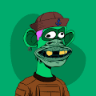 Kevin Yacht Club Official 以太坊区块链上的 388 个 KEVIN KING NFT。像国王一样摇滚。你理应成为 NFT 之王。凯文为 NFT 文化！ ▶ 什么是凯文游艇俱乐部官员？ Kevin Yacht Club Official 是一个 NFT（非同质代币
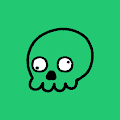 Kevinmories Official Kevinmories 官方 NFT - 常见问题 (FAQ) ▶ 什么是 Kevinmories 官员？ Kevinmories Official 是一个 NFT（非同质代币）集合。存储在区块链上的数字艺术品集合。 ▶ 有多少 Kevinmories 官方代币？ 总共有 555 个 Kevinmories 官方
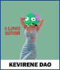 KevireneDao ▶ 什么是 KevireneDao？ KevireneDao 是一个 NFT（不可替代代币）集合。存储在区块链上的数字艺术品集合。 ▶ 有多少 KevireneDao 代币？ 总共有 969 个 KevireneDao NFT。目前
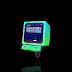 Kibatsu Bots ▶ 什么是 Kibatsu 机器人？ Kibatsu Bots 是一个 NFT（不可替代代币）集合。存储在区块链上的数字艺术品集合。 ▶ Kibatsu Bots 代币有多少？ 总共有 10 个 Kibatsu Bots NFT。目前，57 位
Kibatsu Mecha 这是 Kibatsu Corp. 品牌的创世纪系列，也是 Megacity Kibatsu 传说的组成部分，这是由艺术家和动画师 Jerry Liu（又名SloppyJ44）开发的世界和故事，你拥有一两个 Kibatsu Mecha 吗
Kickz Pass Genesis Kickz Pass Genesis 将提供 250 个。薄荷是免费的 + 汽油和完全白名单销售。所有未售出的 NFT 将被铸造到社区钱包中。我们的项目由德正通孵化。他们的持有者将完全融入 Kickz Pass
Kids ofthe World ▶ 什么是 KidsOfTheWorld？ KidsOfTheWorld 是一个 NFT（不可替代令牌）集合。存储在区块链上的数字艺术品集合。 ▶ 有多少 KidsOfTheWorld 代币？ 总共有 20,000 个 KidsOfTheWorld NFT
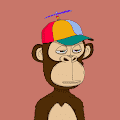 Kindergarten BabyApes (KBA) 再建五所学校！- 20% 的版税用于在世界各地建造更多学校。幼儿园 BabyApes (KBA) 是生活在以太坊区块链上的 10,000 只 BabyApes 的集合。 KBA 的故事始于父母离开他们的孩子，来到一个
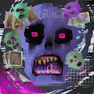 KING XEROX DROPS ▶ 什么是 KING XEROX DROPS？ KING XEROX DROPS 是一个 NFT（不可替代令牌）集合。存储在区块链上的数字艺术品集合。 ▶ 有多少 KING XEROX DROPS 代币？ 总共有 10 个 KING XEROX DROPS NFT。
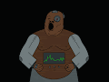 KING'S GALA 随机生成的个人资料图片是对我们面前的 PFP 的致敬。当我们在 INCOOOM 进入 TAKEOVER EPOCH 时，我们必须永远记住我们来自哪里。享受国王的所有荣耀，因为无论您踏入元宇宙，
KingFrogs 然后一个阳光明媚的日子，一只 KingFrog 出现在每个 SupDuck 持有人的平房中，鸭子不再孤独！ KingFrog’s 不仅给鸭子们带来了友谊，还为持有者带来了终极实用性——利用他们的 $VOLT
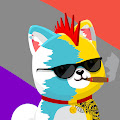 Kishuverse [Kishuverse 超级稀有 NFT 赠品——等你来拿！嗨 Kishu 社区，随着市场继续对所有参与者进行最艰难的考验，Kishu 表现强劲。你知道我们多么喜欢用一些特别的奖品和赠
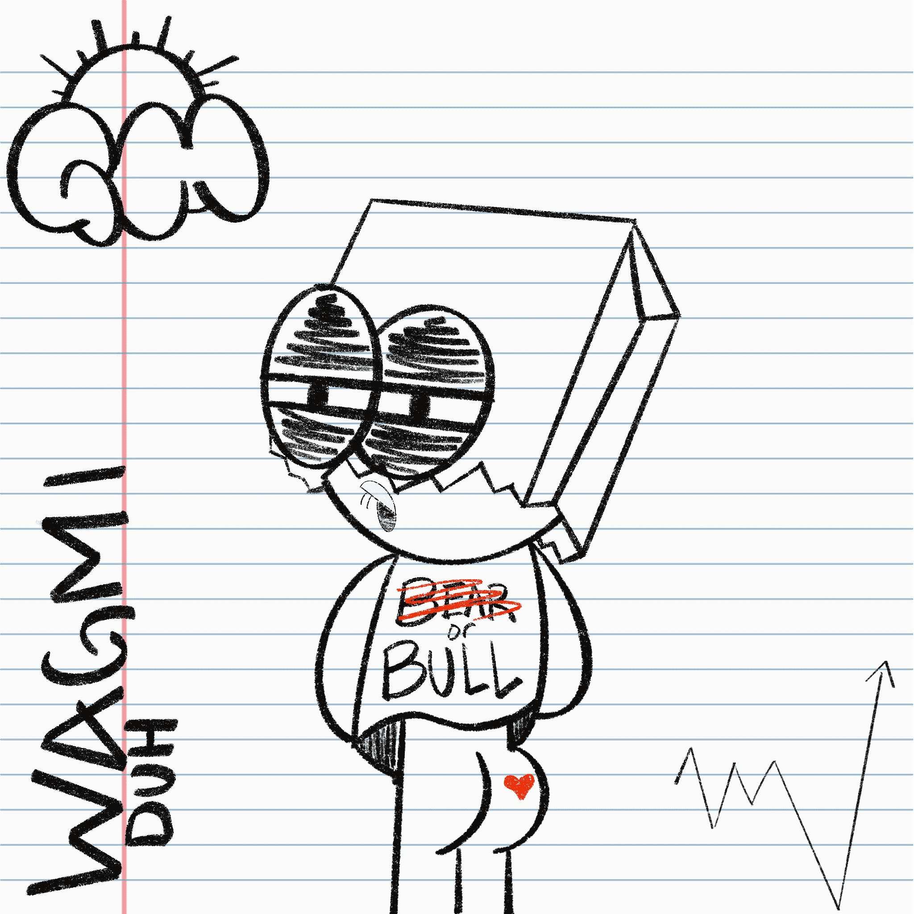 Kiss My Ass by The Entroverts 性格内向的人曾经是一个外向的人，但在某种程度上，他们面临着某种类型的创伤，导致他们从社会中退缩。该项目致力于这些人，并专注于消除心理健康问题
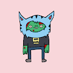 Kitbash Boogers 该集合由以太坊区块链上的 1,111 个独特的 1/1 NFT 组成。该系列中的每个单独的 NFT 都是一件 100% 手工制作的原创艺术品，不是以编程方式生成的。使用所有四个系列的特
KitPics ▶ 什么是 KitPics？ KitPics 是一个 NFT（不可替代令牌）集合。存储在区块链上的数字艺术品集合。 ▶ 有多少个 KitPics 代币？ 总共有 5,270 个 KitPics NFT。目前，1,
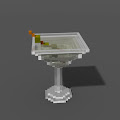 Kittys Bar Drinks Shop artonomous 是一种人工智能机器，可以用画笔在画布上作画。虽然它已经可以画出与人类相当的肖像画，但摄影师 Kitty Simpson 和 AI 艺术家 Pindar Van Arman 已经联手教它美术的微妙之处。